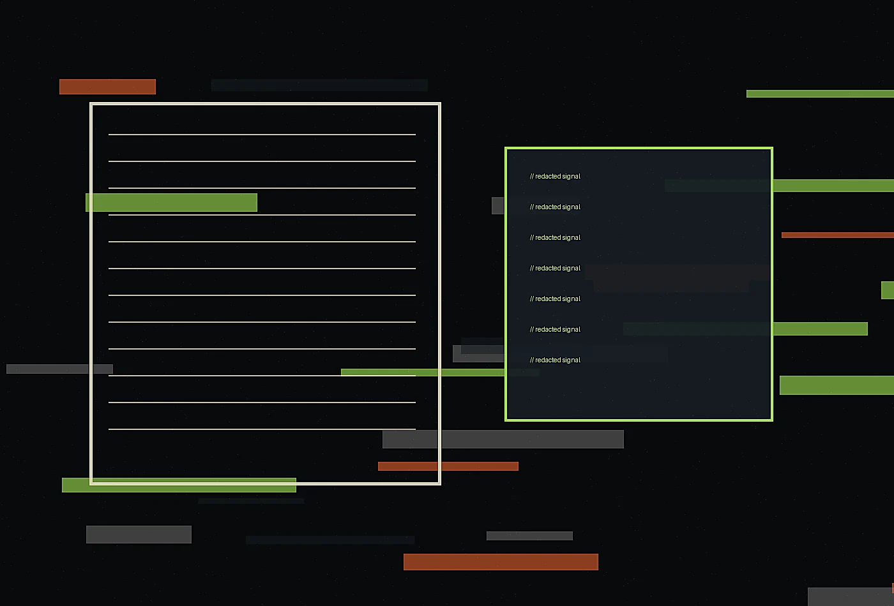
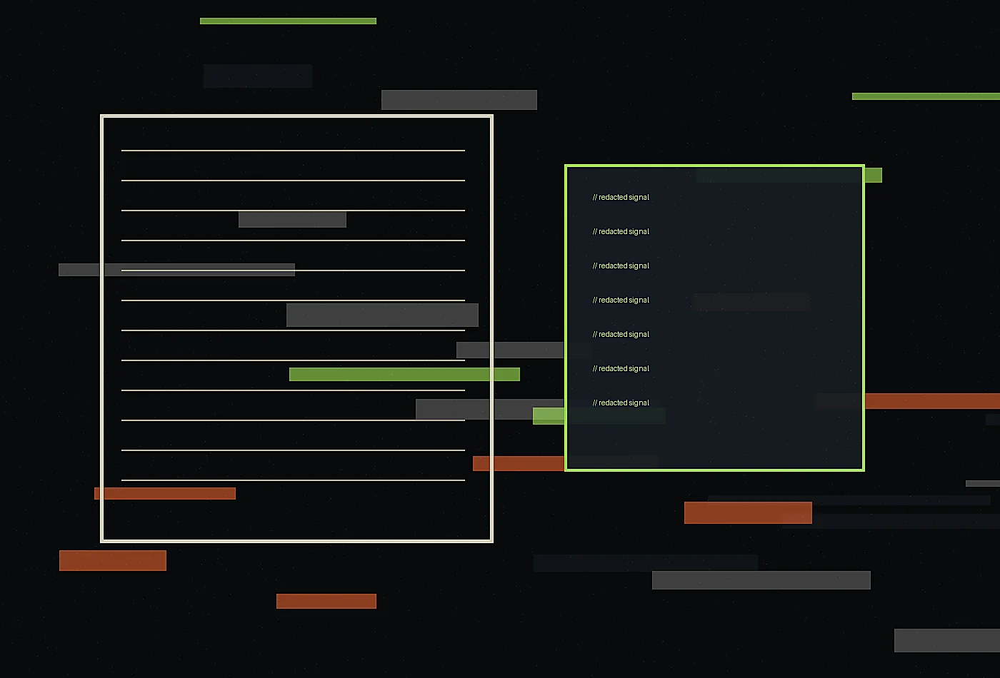

Noir editorial cyber-intelligence bureau
Service One at Cipher Quill
Executive Threat Narratives gives teams a focused way to understand present conditions, sharpen priorities, and move from scattered observations to a confident plan.
Request a briefing
Executive Threat Narratives
We convert technical risk into precise, board-ready intelligence that keeps nuance intact and avoids alarmist theater. This service is designed for leaders who know something needs to change but need the evidence, language, and sequence to change it responsibly. We clarify what is working, what is fragile, and which move should happen first.
Process
- Frame
We define the decision, audience, constraints, and evidence needed.
- Observe
We study the live environment, documents, stakeholders, and behaviors around the challenge.
- Design
We create options, prototypes, language, and operating guidance.
- Transfer
We package the system so teams can maintain and adapt it.
Best fit
This engagement fits organizations preparing for launch, repair, expansion, seasonal pressure, governance review, or a shift in audience expectation. It is especially useful when internal teams have strong knowledge but need a structured outside lens to convert that knowledge into aligned action.

Representative outputs
- Decision brief with priorities and tradeoffs
- Experience map or operating sequence
- Language samples and visual direction
- Implementation checklist with ownership notes
Expected result
The result is not a stack of inspiration. It is a usable system that makes the next decision easier, gives teams a shared vocabulary, and improves the experience for the people who rely on it. We leave room for adaptation because responsible strategy should stay alive after delivery.
Discuss this serviceWe work with the documents and meetings that already shape security decisions: board packets, incident rooms, tabletop summaries, advisory drafts, internal explainers, and executive notes. Rather than adding another noisy channel, we improve the language, sequence, and evidence standards of the channels leaders already read.
Our editorial lens is useful before, during, and after pressure events. Beforehand, we define formats and vocabulary. During response, we keep updates factual and proportionate. Afterward, we help teams preserve the record, explain lessons, and improve governance without turning every retrospective into blame or brand management.